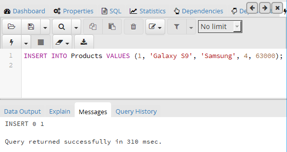

Вернуться на главную страницу →
Вернуться на главную страницу →
Операции с данными
Добавление данных. Команда Insert
Для добавления данных применяется команда INSERT, которая имеет следующий формальный синтаксис:
1 INSERT INTO имя_таблицы (столбец1, столбец2, ... столбецN)
2 VALUES (значение1, значение2, ... значениеN)
После INSERT INTO идет имя таблицы, затем в скобках указываются все столбцы через запятую, в которые надо добавлять данные. И в конце после слова VALUES в скобках перечисляются добавляемые значения.
Допустим, у нас в базе данных есть следующая таблица:
1 CREATE TABLE Products
2 (
3 Id SERIAL PRIMARY KEY,
4 ProductName VARCHAR(30) NOT NULL,
5 Manufacturer PRIMARY KEY(20) NOT NULL,
6 ProductCount INTEGER DEFAULT 0,
7 Price NUMERIC
8 );
Добавим в нее одну строку с помощью команды INSERT:
1 INSERT INTO Products VALUES (1, 'Galaxy S9', 'Samsung', 4, 63000)
После удачного выполнения в pgAdmin в поле сообщений должно появиться сообщение "INSERT 0 1":
Стоит учитывать, что значения для столбцов в скобках после ключевого слова VALUES передаются по порядку их объявления. Например, в выражении CREATE TABLE выше можно увидеть, что первым столбцом идет Id, поэтому этому столбцу передаетсячисло 1. Второй столбец называется ProductName, поэтому второе значение - строка "Galaxy S9" будет передано именно этому столбцу и так далее. То есть значения передаются столбцам следующим образом:
- Id: 1
- ProductName: 'Galaxy S9'
- Manufacturer: 'Samsung'
- ProductCount: 4
- Price: 63000
Также при вводе значений можно указать непосредственные столбцы, в которые будут добавляться значения:
1 INSERT INTO Products (ProductName, Price, Manufacturer)
2 VALUES ('iPhone X', 71000, 'Apple');
Здесь значение указывается только для трех столбцов. Причем теперь значения передаются в порядке следования столбцов:
- ProductName: 'iPhone X'
- Manufacturer: 'Apple'
- Price: 71000
Для столбца Id значение будет генерироваться автоматически базой данных, так как он представляет тип Serial. То есть к значению из последней строки будет добавляться единица.
Для остальных столбцов будет добавляться значение по умолчанию, если задан атрибут DEFAULT (например, для столбца ProductCount), значение NULL. При этом неуказанные столбцы (за исключением тех, которые имеют тип Serial) должны допускать значение NULL или иметь атрибут DEFAULT.
Если конкретные столбцы не указываются, как в первом примере, тогда мы должны передать значения для всех столбцов в таблице.
Также мы можем добавить сразу несколько строк:
1 INSERT INTO Products (ProductName, Manufacturer, ProductCount, Price)
2 VALUES
3 ('iPhone 6', 'Apple', 3, 36000),
4 ('Galaxy S8', 'Samsung', 2, 46000),
5 ('Galaxy S8 Plus', 'Samsung', 1, 56000),
В данном случае в таблицу будут добавлены три строки.
Возвращение значений
Если мы добавляем значения только для части столбцов, то мы можем не знать, какие значения будут у других столбцов. Например, какое значени получит столбец Id у товара. С помощью оператора RETURNING мы можем получить это значение:
1 INSERT INTO Products
2 (ProductName, Manufacturer, ProductCount, Price)
3 VALUES('Desire 12', 'HTC', 8, 21000) RETURNING id;